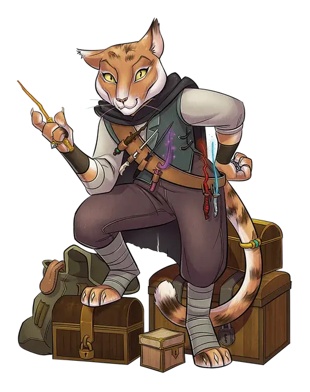

Два сухих плаща
Two Dry Cloaks
Средний Гуманоид (Табакси), любое мировоззрение, именной НИП

Класс Доспеха 12
Хиты 27 (6к8)
Скорость 30 футов
| мод | спас | ||
|---|---|---|---|
| СИЛ | 10 | +0 | +0 |
| ЛОВ | 15 | +2 | +2 |
| ТЕЛ | 10 | +0 | +0 |
| мод | спас | ||
|---|---|---|---|
| ИНТ | 12 | +1 | +1 |
| МДР | 14 | +2 | +2 |
| ХАР | 16 | +3 | +3 |
Навыки Восприятие +6, Ловкость рук +4, Обман +5, Проницательность +4, Расследование +5, Скрытность +4, Убеждение +5
Чувства пассивное Восприятие 16
Языки до двух любых языков
Опасность 1 (200 опыта)
Бонус мастерства +2
Среда обитания Город
Особенности
Кошачье проворство. Когда табакси двигается в бою в свой ход, он может удвоить свою скорость до конца хода. Использовав эту особенность, табакси не может использовать её снова, до тех пор, пока он не переместится на 0 футов за один из своих ходов.
Хитрое действие. Два сухих плаща могут в каждом своём ходу бонусным действием совершать Засаду, Отход или Рывок.
Скрытая атака (1/ход). Два сухих плаща наносят дополнительный урон 7 (2к6), если попадают по цели атакой оружием, совершённой с преимуществом к броску атаки, или же если цель находится в пределах 5 футов от дееспособного союзника Два сухих плаща, и Два сухих плаща совершали бросок атаки без помехи.
Действия
Мультиатака. Два сухих плаща совершают две рукопашные атаки.
Короткий меч. Рукопашная атака оружием: +4 к попаданию, досягаемость 5 футов, одна цель. Попадание: 5 (1к6 + 2) колющего урона.
Ручной арбалет. Дальнобойная атака оружием: +4 к попаданию, дистанция 30/120 футов, одна цель. Попадание: 5 (1к6 + 2) колющего урона.
Когти. . Рукопашная атака оружием: +2 к попаданию, досягаемость 5 фт., одна цель. Попадание: 2 (1к4) рубящего урона.
Описание
Правители, дворяне, торговцы, главы гильдий и прочие богатые индивидуумы используют шпионов, чтобы выжить в беспощадном мире политики. Шпион обучен тайно собирать информацию. Верный шпион скорее умрёт, чем выдаст информацию, компрометирующую его или его нанимателя.